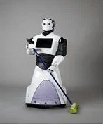
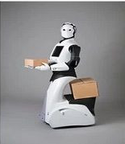
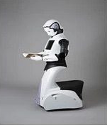
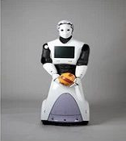

Teknoloji artık bir çok şeyi yapabilecek güce sahip. Bu gücünü de insanoğlu sayesinde elde ediyor. Bilim ve teknolojinin hayatımızı kolaylaştırmada ve günlük yaptıklarımızı kökten değiştirmede bize yol gösterdiği aşikar. Zaten sahip olduğumuz teknoloji alışık olduğumuz teknoloji, daha fazla yenilik yapmamızın yolu açtı ve gelecekte ne tür yenilikler ile karşımıza çıkacağını yine bizler belirliyoruz.
Önümüzdeki 10 yıl içerisinde hayatımızı muhtemelen değiştirecek geleciğin teknolojileri listesi ;
| Ev | İş | Eğitim | Spor |
|---|---|---|---|
| Ev için | İş için | Eğitim amaçlı | Spor amaçlı |
|  |  |  |  |